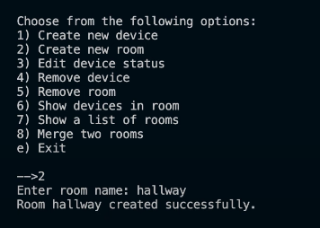

About This Project
This software is a program that utilizes SQL Relational Databases to manage the states of smart home sensors. Each room in the home is saved as a table, and each device/sensor is saved as an entry in that table. You can store the device name and the state it's in (on/off, open/closed, etc.). You can create new devices and rooms, modify them, delete them, and merge multiple rooms if you want. Using the program is as simple as running it in the terminal. You'll be provided with options of what you want to do, and guided through the steps needed to do what is desired.
My purpose for creating this software is to familiarize myself with how SQL Relational Databases function. I wanted to learn the basics of how they work, and create a functioning program utilizing this technology.
Key Features
- Simple CRUD functionality
- Easy terminal interface
- Basic user input validation
Technologies Used
- Python
- sqLite
Links
Screenshots
Lessons Learned
I learned the basics of SQL, and how the CRUD functionality works in it.